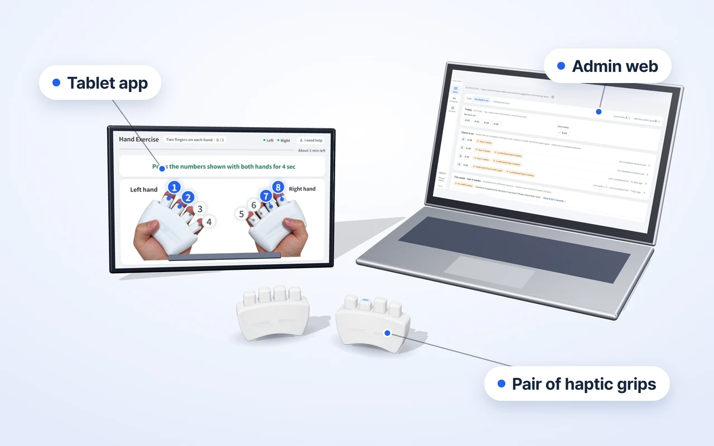

For centers
Tablet + admin web
Planned launch: first half of 2027
- Where
- Welfare centers · senior centers · day and night care centers · care facilities
- Package
- Haptic grips + tablet app + admin web
- Why
- So staff can manage everyone's records in one place and give more attentive service